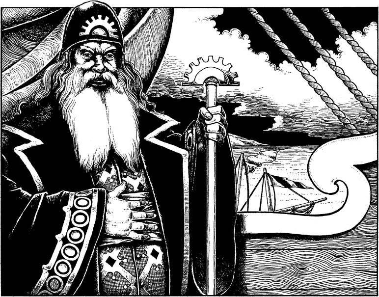

350
As soon as you have passed through the power-shield, you are greeted like a hero by a huge flotilla of fishing vessels and trading barges. An hour ago, upon seeing the eruption of Kazan-Oud, every boat in Herdos set sail for the shield, for the eruption signalled the end of the bane that had haunted Dessi for hundreds of years. Now they cheer the Sommlending warrior who has delivered them from Dessi’s evil shadow. Eager hands pull you aboard Lord Ardan’s caravel, and a fanfare salute is sounded by the trumpeters of his Vakeros guards.
‘We are forever in your debt, Lone Wolf,’ says Lord Ardan, as he shakes your hand warmly in gratitude and friendship. ‘You have achieved what we feared to be impossible, and you live to tell the tale. Your bravery is an inspiration to us all.’ His words are reinforced by the delirious cheers of his people. He asks of your own quest, and, when you remove the Lorestone of Herdos from the pocket of your tattered and scorched tunic, his eyes widen with amazement.

He bows his head and says in a solemn and respectful voice, ‘My lord, you stand upon the threshold of greatness. Your purpose and your destiny are known to the Elder Magi, for we have awaited your coming for many thousands of years. Our survival and the survival of all we cherish rests on the success of your Magnakai quest. The time has come, Lone Wolf, for you to learn our wisdom, for we are of the same blood, you and I, and our fate is bound together. We will prepare you for your next quest, for the Lorestone you must find next exists in the land that was once our home, in the temple that was once our most sacred place of worship, in the chamber where our master first appeared to us.’
Your quest has succeeded, for the strength and wisdom of the Lorestone of Herdos is now a part of your body and spirit. But there is much for you to learn from the Elder Magi as they prepare you for the most challenging of the Magnakai quests you have yet to attempt, a quest that will take you deep into the hostile swamps of the Danarg, where the evil creatures of Agarash the Damned still thrive and dominate the land.
If you have the courage of a true Kai Master, the secrets of the Elder Magi and the perils of the Danarg await you in Book 8 of the Lone Wolf series entitled: